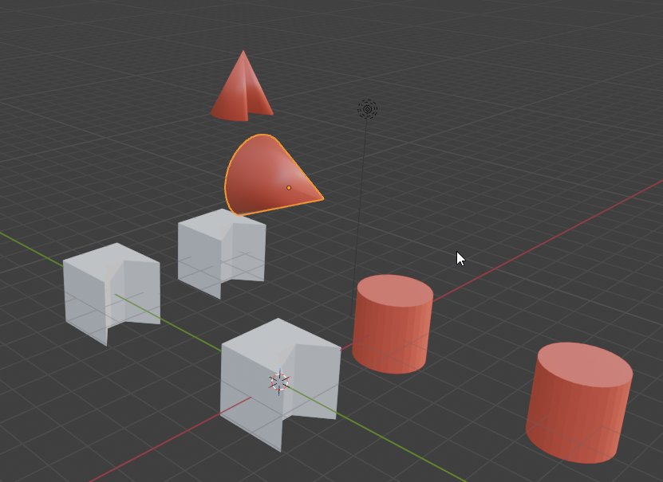
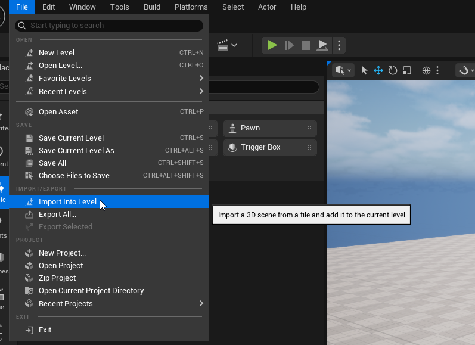
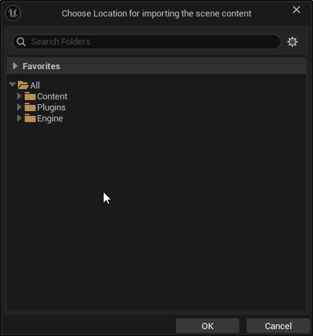
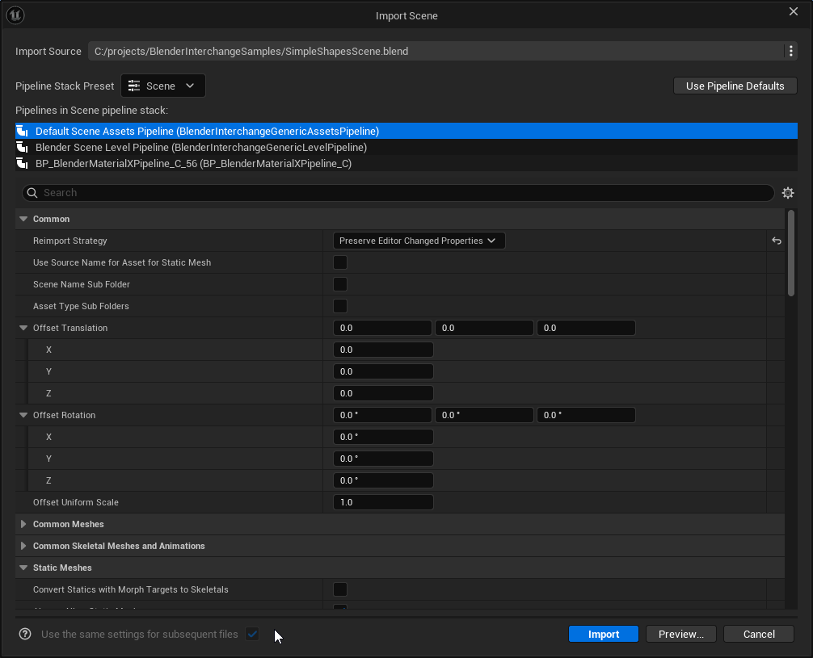
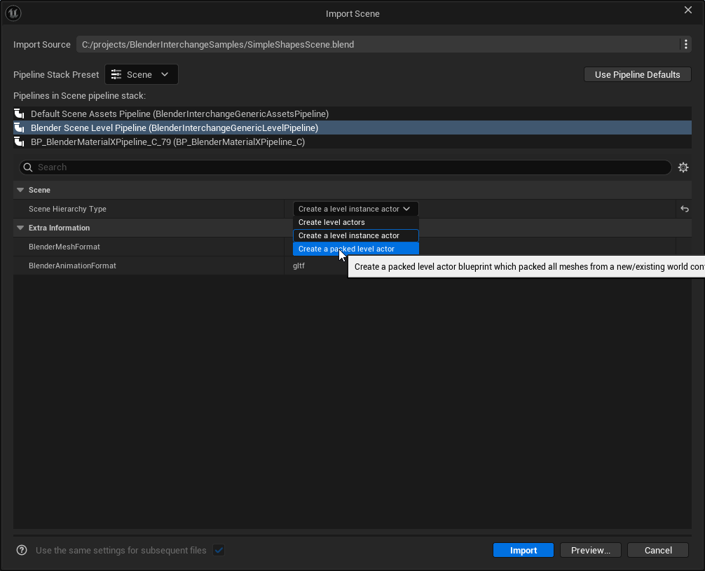
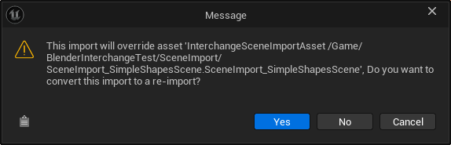
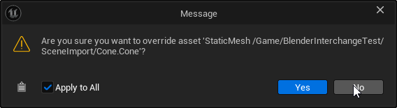

Full Scene Import
Blender Interchange supports importing entire scenes from blender as level instances. This is generally recommended for static geometry used for environments. Skeletal meshes are not supported for scene import since skeletal meshes have issues when not exported at the origin from blender.
If you run into any issues please reach out on our discord and hopefully we can work you through your issue. https://discord.gg/fc2HYwJS
Importing the Scene
The scene import button is a bit hidden in Unreal Engine. Dragging and dropping into the content browser will not give you the option to import a blender file as a scene. In this example I am using simple geometric shapes for simplicity but you can also import complex scenes to good results.
This is the scene I will be importing. I used simple shapes with some distinct features to show that objects and materials are imported correctly.

Instead you need to find it under File > Import into Level... in the top left

Once you hit that option you will be presented with a file select dialog where you can select your blender file
After selecting your file you need to select which folder to create the assets in. Once the import finishes it will create meshes and materials the same as if you had dragged it into the content browser.

Click through the import dialog like before. You can change options just as you would a normal asset import into the content browser.

This is what the scene looks like after import. You should see something similar. Notice that duplicate instances share a mesh if they were set up that way in blender. So if you have a wooden fence made out of 1000 boards you will import 1 board mesh instead of 1000 unique boards.

Packed Level Actors
You may want to create a packed level actor instead of a vanilla level instance. You can set this option under the Scene Hierarchy Type under level instance data to create a packed level actor from the level instance. Packed level instances use ISMs to render geometry instead of individual actors and can be more performant for environment art for example.

PCG Level Data
PCG data can also be created by a level instance to be plugged into unreal's PCG system. Currently it is not an option to automatically create PCG data in the import dialog. You can right click the level instance after it's created to create PCG data though as an added step.
Let us know if this is a feature you would want in our discord. Our studio heavily uses PCG and can provide support on this. https://discord.gg/fc2HYwJS
Importing a Level with Assets Already in the Project
You may find that you want to import a scene composed of other assets in your project. This can be for a few reasons: 1. You want to import LODs and simple collision for those assets which would not work with scene import but would work well importing each asset as a separate blend file. 2. You have already imported these assets and don't want to reimport over your local changes.
While this is slightly more involved than a clean scene import there is a way to do this. First you must put all the meshes that the scene will import in the same location.
Here I've used the same example as last time. However I have given the cone a material change. I could have also imported this separately to import collision or LODs. I could have also messed with it's nanite build settings. Every other asset is the same.

To import the scene using this modified cone simply start the level import like before using File > Import into Level. Select the folder containing your assets and you will get a warningpopup. Be sure to select "No"! We do not want to convert to a reimport.

Click through the reimport dialog as before. Note that we will not be overriding the assets so be assured.
After hitting import you will get a second dialog asking if you want to override each asset.

Caveots
Current GLTF is the recommend format for importing full scenes. Fbx will also work but will likely look a bit worse.
It is noted that USD will not work well with duplicate instances and will create one mesh per instance. This is because Blender does not have support for instancing as of Blender 5.0 and creates copies even if 2 mesh instances share a model in blender. As of the time of writing at the end of 2025, the USD file format is not that well supported by both Unreal Engine and Blender. Hopefully support for features like instancing and MaterialX will improve on both sides.
Make sure your translator does not have "Export Static Meshes Local" enabled. This will put all meshes at the origin.

If you are running into issues and don't know what is the issue I would recommend hitting "Use Pipeline Defaults" to make sure you are using settings that have been tested. Not all combinations of settings available in interchange will result in good scene import but the defaults that ship with the plugin have been shown to work.